<!DOCTYPE html PUBLIC "-//W3C//DTD HTML 4.01 Transitional//EN" "http://www.w3.org/TR/html4/loose.dtd">
<html>

<head>
    <meta http-equiv="Content-Type" content="text/html; charset=utf-8">
    <meta http-equiv="X-UA-Compatible" content="IE=edge,chrome=1">
    <!-- <meta name="viewport" content="width=device-width, initial-scale=1.0"> -->
    <meta name="viewport" content="width=600, maximum-scale=1.0,user-scalable=yes,target-densitydpi=device-dpi">
    <title>second chart</title>
    <!-- 引入 ECharts 文件 -->
    <script type="text/javascript" src="./js/echarts.js"></script>
    <script type="text/javascript" src="./js/jquery-1.11.1.js"></script>


    <link type="text/css" rel="stylesheet" href="http://fonts.googleapis.com/css?family=Open+Sans:400italic,400,300,700">
    <link type="text/css" rel="stylesheet" href="http://fonts.googleapis.com/css?family=Oswald:400,700,300">
    <link type="text/css" rel="stylesheet" href="style/bootstrap.min.css">
    <link type="text/css" rel="stylesheet" href="style/main.css">
</head>

<body>
    <div id="main" style="width:600px; height:600px;"></div>


    <div class="row mbl" id="info">

    </div>

    <script type="text/javascript">
        // 基于准备好的dom，初始化echarts实例
        var myChart = echarts.init(document.getElementById('main'));

        function showProvince() {
            var name = 'guangdong';


            $.get('./json/guangdong.json', function(geoJson) {

                echarts.registerMap(name, geoJson);

                myChart.setOption(option = {
                    backgroundColor: '#252525',
                    title: {
                        text: '广东',
                        left: 'center',
                        textStyle: {
                            color: '#fff'
                        }
                    },

                    series: [{
                        type: 'map',
                        mapType: name,
                        label: {
                            emphasis: {
                                textStyle: {
                                    color: '#fff'
                                }
                            }
                        },
                        itemStyle: {
                            normal: {
                                borderColor: '#f7ea52',
                                areaColor: '#fff',
                            },
                            emphasis: {
                                areaColor: '#f7ea52',
                                borderWidth: 0
                            }
                        },

                        animation: false
                            // animationDurationUpdate: 1000,
                            // animationEasingUpdate: 'quinticInOut'
                    }]
                });
            });
        }


        showProvince();
        myChart.on('click', function(city) {
            var div = document.getElementById("info");
            if (city.name == "惠州市") {
                div.innerHTML = "<div class='col-lg-4'><div class='panel'><div class='panel-body'><div class='profile'><div style='margin-bottom: 15px' class='row'><div class='col-xs-12 col-sm-8'><h2>廖承志</h2><p><strong>籍贯:</strong> 广东惠州<strong>（客府）</strong></p><p>男，1908年生，曾当选过5届中央委员</p></div><div class='col-xs-12 col-sm-4 text-center'><figure>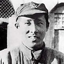</figure></div></div></div></div></div></div><div class='col-lg-4'><div class='panel'><div class='panel-body'><div class='profile'><div style='margin-bottom: 15px' class='row'><div class='col-xs-12 col-sm-8'><h2>田华贵</h2><p><strong>籍贯:</strong> 广东惠州博罗<strong>（客府）</strong></p><p>男，1933年生，曾当选过2届中央委员</p></div><div class='col-xs-12 col-sm-4 text-center'><figure></figure></div></div></div></div></div></div><div class='col-lg-4'><div class='panel'><div class='panel-body'><div class='profile'><div style='margin-bottom: 15px' class='row'><div class='col-xs-12 col-sm-8'><h2>廖晖</h2><p><strong>籍贯:</strong> 广东惠州<strong>（客府）</strong></p><p>男，1942年生，曾当选过6届中央委员</p></div><div class='col-xs-12 col-sm-4 text-center'><figure>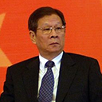</figure></div></div></div></div></div></div><div class='col-lg-4'><div class='panel'><div class='panel-body'><div class='profile'><div style='margin-bottom: 15px' class='row'><div class='col-xs-12 col-sm-8'><h2>潘逸阳</h2><p><strong>籍贯:</strong> 广东惠州惠阳<strong>（客府）</strong></p><p>男，1961年生，曾当选过1届中央委员</p></div><div class='col-xs-12 col-sm-4 text-center'><figure></figure></div></div></div></div></div></div>";
            } else if (city.name == "汕尾市") {
                div.innerHTML = "<div class='col-lg-4'><div class='panel'><div class='panel-body'><div class='profile'><div style='margin-bottom: 15px' class='row'><div class='col-xs-12 col-sm-8'><h2>谢非</h2><p><strong>籍贯:</strong> 广东汕尾陆河<strong>（客府）</strong></p><p>男，1932年生，曾当选过4届中央委员</p></div><div class='col-xs-12 col-sm-4 text-center'><figure></figure></div></div></div></div></div></div><div class='col-lg-4'><div class='panel'><div class='panel-body'><div class='profile'><div style='margin-bottom: 15px' class='row'><div class='col-xs-12 col-sm-8'><h2>彭士禄</h2><p><strong>籍贯:</strong> 广东汕尾海丰<strong>（潮府）</strong></p><p>男，1925年生，曾当选过1届中央委员</p></div><div class='col-xs-12 col-sm-4 text-center'><figure>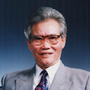</figure></div></div></div></div></div></div>";
            } else if (city.name == "韶关市") {
                div.innerHTML = "<div class='col-lg-4'><div class='panel'><div class='panel-body'><div class='profile'><div style='margin-bottom: 15px' class='row'><div class='col-xs-12 col-sm-8'><h2>谭甫仁</h2><p><strong>籍贯:</strong> 广东韶关仁化<strong>（客府）</strong></p><p>男，1910年生，曾当选过1届中央委员</p></div><div class='col-xs-12 col-sm-4 text-center'><figure>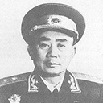</figure></div></div></div></div></div></div>";
            } else if (city.name == "揭阳市") {
                div.innerHTML = "<div class='col-lg-4'><div class='panel'><div class='panel-body'><div class='profile'><div style='margin-bottom: 15px' class='row'><div class='col-xs-12 col-sm-8'><h2>蔡诚</h2><p><strong>籍贯:</strong> 广东揭阳普宁<strong>（客府）</strong></p><p>男，1938年生，曾当选过2届中央委员</p></div><div class='col-xs-12 col-sm-4 text-center'><figure></figure></div></div></div></div></div></div>";
            } else if (city.name == "潮州市") {
                div.innerHTML = "<div class='col-lg-4'><div class='panel'><div class='panel-body'><div class='profile'><div style='margin-bottom: 15px' class='row'><div class='col-xs-12 col-sm-8'><h2>林若</h2><p><strong>籍贯:</strong> 广东潮州潮安<strong>（客府）</strong></p><p>男，1924年生，曾当选过2届中央委员</p></div><div class='col-xs-12 col-sm-4 text-center'><figure></figure></div></div></div></div></div></div><div class='col-lg-4'><div class='panel'><div class='panel-body'><div class='profile'><div style='margin-bottom: 15px' class='row'><div class='col-xs-12 col-sm-8'><h2>卢瑞华</h2><p><strong>籍贯:</strong> 广东潮州<strong>（潮府）</strong></p><p>男，1938年生，曾当选过2届中央委员</p></div><div class='col-xs-12 col-sm-4 text-center'><figure></figure></div></div></div></div></div></div>";
            } else if (city.name == "河源市") {
                div.innerHTML = "<div class='col-lg-4'><div class='panel'><div class='panel-body'><div class='profile'><div style='margin-bottom: 15px' class='row'><div class='col-xs-12 col-sm-8'><h2>肖扬</h2><p><strong>籍贯:</strong> 广东河源<strong>（客府）</strong></p><p>男，1938年生，曾当选过2届中央委员</p></div><div class='col-xs-12 col-sm-4 text-center'><figure></figure></div></div></div></div></div></div>";
            } else if (city.name == "深圳市") {
                div.innerHTML = "<div class='col-lg-4'><div class='panel'><div class='panel-body'><div class='profile'><div style='margin-bottom: 15px' class='row'><div class='col-xs-12 col-sm-8'><h2>陈郁</h2><p><strong>籍贯:</strong> 广东深圳宝安<strong>（客府）</strong></p><p>男，1901年生，曾当选过4届中央委员</p></div><div class='col-xs-12 col-sm-4 text-center'><figure>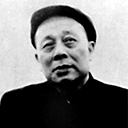</figure></div></div></div></div></div></div>";
            } else if (city.name == "梅州市") {
                div.innerHTML = "<div class='col-lg-4'><div class='panel'><div class='panel-body'><div class='profile'><div style='margin-bottom: 15px' class='row'><div class='col-xs-12 col-sm-8'><h2>古大存</h2><p><strong>籍贯:</strong> 广东梅州五华<strong>（客府）</strong></p><p>男，1897年生，曾当选过2届中央委员</p></div><div class='col-xs-12 col-sm-4 text-center'><figure></figure></div></div></div></div></div></div><div class='col-lg-4'><div class='panel'><div class='panel-body'><div class='profile'><div style='margin-bottom: 15px' class='row'><div class='col-xs-12 col-sm-8'><h2>曾国华</h2><p><strong>籍贯:</strong> 广东梅州五华<strong>（客府）</strong></p><p>男，1910年生，曾当选过1届中央委员</p></div><div class='col-xs-12 col-sm-4 text-center'><figure>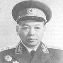</figure></div></div></div></div></div></div><div class='col-lg-4'><div class='panel'><div class='panel-body'><div class='profile'><div style='margin-bottom: 15px' class='row'><div class='col-xs-12 col-sm-8'><h2>刘均益</h2><p><strong>籍贯:</strong> 广东梅州梅县<strong>（客府）</strong></p><p>男，1943年生，曾当选过2届中央委员</p></div><div class='col-xs-12 col-sm-4 text-enter'><figure></figure></div></div></div></div></div></div><div class='col-lg-4'><div class='panel'><div class='panel-body'><div class='profile'><div style='margin-bottom: 15px' class='row'><div class='col-xs-12 col-sm-8'><h2>李坚真</h2><p><strong>籍贯:</strong> 广东梅州丰顺<strong>（客府）</strong></p><p>女，1907年生，曾当选过2届中央委员</p></div><div class='col-xs-12 col-sm-4 text-center'><figure>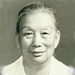</figure></div></div></div></div></div></div><div class='col-lg-4'><div class='panel'><div class='panel-body'><div class='profile'><div style='margin-bottom: 15px' class='row'><div class='col-xs-12 col-sm-8'><h2>叶剑英</h2><p><strong>籍贯:</strong> 广东梅州梅县<strong>（客府）</strong></p><p>男，1897年生，曾当选过6届中央委员</p></div><div class='col-xs-12 col-sm-4 text-center'><figure>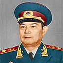</figure></div></div></div></div></div></div><div class='col-lg-4'><div class='panel'><div class='panel-body'><div class='profile'><div style='margin-bottom: 15px' class='row'><div class='col-xs-12 col-sm-8'><h2>刘复之</h2><p><strong>籍贯:</strong> 广东梅州五华<strong>（客府）</strong></p><p>男，1917年生，曾当选过1届中央委员</p></div><div class='col-xs-12 col-sm-4 text-center'><figure></figure></div></div></div></div></div></div><div class='col-lg-4'><div class='panel'><div class='panel-body'><div class='profile'><div style='margin-bottom: 15px' class='row'><div class='col-xs-12 col-sm-8'><h2>叶选平</h2><p><strong>籍贯:</strong> 广东梅州梅县<strong>（客府）</strong></p><p>男，1924年生，曾当选过3届中央委员</p></div><div class='col-xs-12 col-sm-4 text-center'><figure>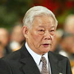</figure></div></div></div></div></div></div><div class='col-lg-4'><div class='panel'><div class='panel-body'><div class='profile'><div style='margin-bottom: 15px' class='row'><div class='col-xs-12 col-sm-8'><h2>杨泰芳</h2><p><strong>籍贯:</strong> 广东梅州梅县<strong>（客府）</strong></p><p>男，1927年生，曾当选过2届中央委员</p></div><div class='col-xs-12 col-sm-4 text-center'><figure>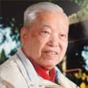</figure></div></div></div></div></div></div><div class='col-lg-4'><div class='panel'><div class='panel-body'><div class='profile'><div style='margin-bottom: 15px' class='row'><div class='col-xs-12 col-sm-8'><h2>黄华华</h2><p><strong>籍贯:</strong> 广东梅州兴宁<strong>（客府）</strong></p><p>男，1946年生，曾当选过3届中央委员</p></div><div class='col-xs-12 col-sm-4 text-center'><figure></figure></div></div></div></div></div></div><div class='col-lg-4'><div class='panel'><div class='panel-body'><div class='profile'><div style='margin-bottom: 15px' class='row'><div class='col-xs-12 col-sm-8'><h2>何立峰</h2><p><strong>籍贯:</strong> 广东梅州<strong>（客府）</strong></p><p>男，1955年生，曾当选过1届中央委员</p></div><div class='col-xs-12 col-sm-4 text-center'><figure></figure></div></div></div></div></div></div><div class='col-lg-4'><div class='panel'><div class='panel-body'><div class='profile'><div style='margin-bottom: 15px' class='row'><div class='col-xs-12 col-sm-8'><h2>万庆良</h2><p><strong>籍贯:</strong> 广东梅州<strong>（客府）</strong></p><p>男，1964年生，曾当选过1届中央委员</p></div><div class='col-xs-12 col-sm-4 text-center'><figure></figure></div></div></div></div></div></div><div class='col-lg-4'><div class='panel'><div class='panel-body'><div class='profile'><div style='margin-bottom: 15px' class='row'><div class='col-xs-12 col-sm-8'><h2>陈耀邦</h2><p><strong>籍贯:</strong> 广东梅州五华<strong>（客府）</strong></p><p>男，1935年生，曾当选过1届中央委员</p></div><div class='col-xs-12 col-sm-4 text-center'><figure></figure></div></div></div></div></div></div>";
            } else if (city.name == "汕头市") {
                div.innerHTML = "<div class='col-lg-4'><div class='panel'><div class='panel-body'><div class='profile'><div style='margin-bottom: 15px' class='row'><div class='col-xs-12 col-sm-8'><h2>许士杰</h2><p><strong>籍贯:</strong> 广东汕头澄海<strong>（潮府）</strong></p><p>男，1920年生，曾当选过1届中央委员</p></div><div class='col-xs-12 col-sm-4 text-center'><figure></figure></div></div></div></div></div></div><div class='col-lg-4'><div class='panel'><div class='panel-body'><div class='profile'><div style='margin-bottom: 15px' class='row'><div class='col-xs-12 col-sm-8'><h2>林树森</h2><p><strong>籍贯:</strong> 广东汕头<strong>（潮府）</strong></p><p>男，1946年生，曾当选过2届中央委员</p></div><div class='col-xs-12 col-sm-4 text-center'><figure></figure></div></div></div></div></div></div>";
            } else if (city.name == "广州市") {
                div.innerHTML = "<div class='col-lg-4'><div class='panel'><div class='panel-body'><div class='profile'><div style='margin-bottom: 15px' class='row'><div class='col-xs-12 col-sm-8'><h2>石少华</h2><p><strong>籍贯:</strong> 广东广州<strong>（广府）</strong></p><p>男，1918年生，曾当选过2届中央委员</p></div><div class='col-xs-12 col-sm-4 text-center'><figure>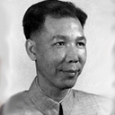</figure></div></div></div></div></div></div><div class='col-lg-4'><div class='panel'><div class='panel-body'><div class='profile'><div style='margin-bottom: 15px' class='row'><div class='col-xs-12 col-sm-8'><h2>梁栋材</h2><p><strong>籍贯:</strong> 广东广州<strong>（广府）</strong></p><p>男，1932年生，曾当选过2届中央委员</p></div><div class='col-xs-12 col-sm-4 text-center'><figure>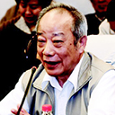</figure></div></div></div></div></div></div>";
            } else if (city.name == "佛山市") {
                div.innerHTML = "<div class='col-lg-4'><div class='panel'><div class='panel-body'><div class='profile'><div style='margin-bottom: 15px' class='row'><div class='col-xs-12 col-sm-8'><h2>欧广源</h2><p><strong>籍贯:</strong> 广东佛山顺德<strong>（广府）</strong></p><p>男，1948年生，曾当选过3届中央委员</p></div><div class='col-xs-12 col-sm-4 text-center'><figure></figure></div></div></div></div></div></div><div class='col-lg-4'><div class='panel'><div class='panel-body'><div class='profile'><div style='margin-bottom: 15px' class='row'><div class='col-xs-12 col-sm-8'><h2>区梦觉</h2><p><strong>籍贯:</strong> 广东佛山南海<strong>（广府）</strong></p><p>女，1906年生，曾当选过1届中央委员</p></div><div class='col-xs-12 col-sm-4 text-center'><figure></figure></div></div></div></div></div></div>";
            } else if (city.name == "茂名市") {
                div.innerHTML = "<div class='col-lg-4'><div class='panel'><div class='panel-body'><div class='profile'><div style='margin-bottom: 15px' class='row'><div class='col-xs-12 col-sm-8'><h2>王美季</h2><p><strong>籍贯:</strong> 广东茂名电白<strong>（广府）</strong></p><p>女，1942年生，曾当选过1届中央委员</p></div><div class='col-xs-12 col-sm-4 text-center'><figure></figure></div></div></div></div></div></div><div class='col-lg-4'><div class='panel'><div class='panel-body'><div class='profile'><div style='margin-bottom: 15px' class='row'><div class='col-xs-12 col-sm-8'><h2>戴光前</h2><p><strong>籍贯:</strong> 广东茂名电白<strong>（广府）</strong></p><p>男，1934年生，曾当选过1届中央委员</p></div><div class='col-xs-12 col-sm-4 text-center'><figure></figure></div></div></div></div></div></div>";
            } else if (city.name == "阳江市") {
                div.innerHTML = "<div class='col-lg-4'><div class='panel'><div class='panel-body'><div class='profile'><div style='margin-bottom: 15px' class='row'><div class='col-xs-12 col-sm-8'><h2>曾庆存</h2><p><strong>籍贯:</strong> 广东阳江<strong>（广府）</strong></p><p>男，1935年生，曾当选过2届中央委员</p></div><div class='col-xs-12 col-sm-4 text-center'><figure></figure></div></div></div></div></div></div>";
            } else if (city.name == "东莞市") {
                div.innerHTML = "<div class='col-lg-4'><div class='panel'><div class='panel-body'><div class='profile'><div style='margin-bottom: 15px' class='row'><div class='col-xs-12 col-sm-8'><h2>李任之</h2><p><strong>籍贯:</strong> 广东东莞<strong>（广府）</strong></p><p>男，1919年生，曾当选过2届中央委员</p></div><div class='col-xs-12 col-sm-4 text-center'><figure>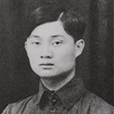</figure></div></div></div></div></div></div><div class='col-lg-4'><div class='panel'><div class='panel-body'><div class='profile'><div style='margin-bottom: 15px' class='row'><div class='col-xs-12 col-sm-8'><h2>张帼英</h2><p><strong>籍贯:</strong> 广东东莞<strong>（广府）</strong></p><p>女，1937年生，曾当选过3届中央委员</p></div><div class='col-xs-12 col-sm-4 text-center'><figure>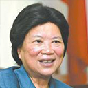</figure></div></div></div></div></div></div>";
            } else if (city.name == "中山市") {
                div.innerHTML = "<div class='col-lg-4'><div class='panel'><div class='panel-body'><div class='profile'><div style='margin-bottom: 15px' class='row'><div class='col-xs-12 col-sm-8'><h2>郑华</h2><p><strong>籍贯:</strong> 广东中山<strong>（广府）</strong></p><p>男，1930年生，曾当选过1届中央委员</p></div><div class='col-xs-12 col-sm-4 text-center'><figure></figure></div></div></div></div></div></div><div class='col-lg-4'><div class='panel'><div class='panel-body'><div class='profile'><div style='margin-bottom: 15px' class='row'><div class='col-xs-12 col-sm-8'><h2>陈绍基</h2><p><strong>籍贯:</strong> 广东中山<strong>（广府）</strong></p><p>男，1945年生，曾当选过1届中央委员</p></div><div class='col-xs-12 col-sm-4 text-center'><figure></figure></div></div></div></div></div></div>";
            } else if (city.name == "江门市") {
                div.innerHTML = "<div class='col-lg-4'><div class='panel'><div class='panel-body'><div class='profile'><div style='margin-bottom: 15px' class='row'><div class='col-xs-12 col-sm-8'><h2>黄枢</h2><p><strong>籍贯:</strong> 广东江门台山<strong>（广府）</strong></p><p>男，1920年生，曾当选过1届中央委员</p></div><div class='col-xs-12 col-sm-4 text-center'><figure></figure></div></div></div></div></div></div><div class='col-lg-4'><div class='panel'><div class='panel-body'><div class='profile'><div style='margin-bottom: 15px' class='row'><div class='col-xs-12 col-sm-8'><h2>吴冷西</h2><p><strong>籍贯:</strong> 广东江门新会<strong>（广府）</strong></p><p>男，1919年生，曾当选过2届中央委员</p></div><div class='col-xs-12 col-sm-4 text-center'><figure>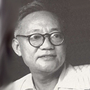</figure></div></div></div></div></div></div><div class='col-lg-4'><div class='panel'><div class='panel-body'><div class='profile'><div style='margin-bottom: 15px' class='row'><div class='col-xs-12 col-sm-8'><h2>叶季壮</h2><p><strong>籍贯:</strong> 广东江门新兴<strong>（广府）</strong></p><p>男，1893年生，曾当选过1届中央委员</p></div><div class='col-xs-12 col-sm-4 text-center'><figure>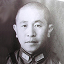</figure></div></div></div></div></div></div>";
            } else if (city.name == "湛江市") {
                div.innerHTML = "<div class='col-lg-4'><div class='panel'><div class='panel-body'><div class='profile'><div style='margin-bottom: 15px' class='row'><div class='col-xs-12 col-sm-8'><h2>刘华秋</h2><p><strong>籍贯:</strong> 广东湛江吴川<strong>（广府）</strong></p><p>男，1939年生，曾当选过3届中央委员</p></div><div class='col-xs-12 col-sm-4 text-center'><figure></figure></div></div></div></div></div></div>";
            } else if (city.name == "肇庆市") {
                div.innerHTML = "<div class='col-lg-4'><div class='panel'><div class='panel-body'><div class='profile'><div style='margin-bottom: 15px' class='row'><div class='col-xs-12 col-sm-8'><h2>刘瑞庆</h2><p><strong>籍贯:</strong> 广东肇庆高要<strong>（广府）</strong></p><p>男，1935年生，曾当选过1届中央委员</p></div><div class='col-xs-12 col-sm-4 text-center'><figure></figure></div></div></div></div></div></div>";
            } else if (city.name == "云浮市") {
                div.innerHTML = "";
            } else if (city.name == "珠海市") {
                div.innerHTML = "";
            } else if (city.name == "清远市") {
                div.innerHTML = "";
            }

        });
    </script>
</body>

</html>